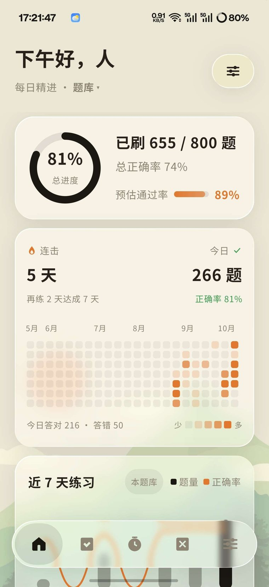
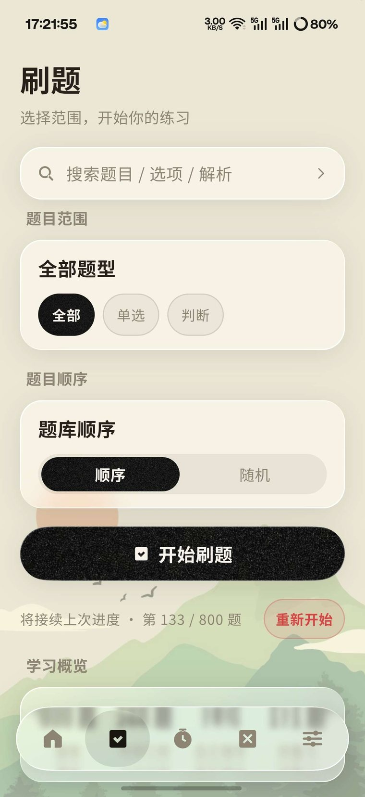
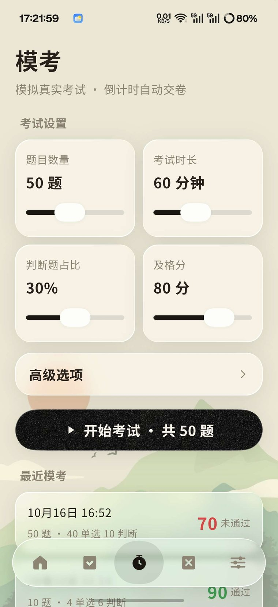

每天练了什么，一眼看到
进度环、预估通过率、连续打卡、学习热力图、近七日题量与正确率曲线，全部由本地答题记录实时聚合。
- ✓学习热力图按月铺开，颜色深浅代表当天练习量，一眼看出断没断过
- ✓预估通过率结合正确率与题量估算，让你知道离及格还有多远
- ✓连续打卡与「再练 N 天达成 M 天」目标推送，断了也能接回来
800 道含解析的正式题库，五种题型，全真模考自动判分，错题自动收录强化。 刷题、模考、统计全部离线，学到哪存在你自己手机里。



界面
全部为应用真实运行画面，未经修饰。
进度环、预估通过率、连续打卡、学习热力图、近七日题量与正确率曲线，全部由本地答题记录实时聚合。
按题型筛选；顺序与随机两套进度各自独立记忆、并按题库隔离，切回任一模式都停在原处。
题数、时长、判断题占比、及格分全部可拖滑杆配置。到点自动交卷，按正确率算分，不倒扣分。
试一下
这就是 App 里逐字浮现的解析。题目取自内置题库，选项顺序已打乱——模考里也能开这个开关。
功能
不堆花哨功能。下面每一条，都是为了让错题真的被消灭。
答错自动收录；连续答对若干次自动「毕业」移出，阈值可调。另有错题特训入口，不占用刷题进度槽。
题干、选项、解析全文检索，命中答案折叠成单字母一行，解析随卡片展开逐字浮现。
自己的题库能导进来：纯文字导 CSV，带图打包 ZIP（题目 CSV + images）。多题库可随时切换。
桌面直接看今日进度，快捷进入错题本与快速模考，不用先打开 App 再点两下。
三档主题、四档字号、四款阅读字体（自带黑体 / 思源宋体 / 霞鹜文楷），四种内置壁纸或自定义图片。
定时提醒刷题，当天已经练过就不打扰。精确闹钟调度，进程被杀也准时送达。
暖色护眼模式；连续刷题 20 分钟提醒看远处（考试期间绝不打扰）；低配设备可一键关闭玻璃特效。
解析展开时按 20 字/秒逐字浮现，每个字从「透明 + 模糊」淡入并逐渐清晰，读起来是打字机而非闪烁。
隐私
没有服务器，就没有「上传」这一说。以下是每个权限的实际用途。
| 权限 | INTERNET 仅用于你手动点「检查更新」时访问 GitHub Releases，以及点开下载链接时探测发布页是否可达。 |
|---|---|
| 通知 | POST_NOTIFICATIONS 每日学习提醒；刷过当天不会打扰。 |
| 存储 | 无需任何存储权限。导入题库走系统文件选择器，保存图片走 MediaStore，均不申请读写整个存储。 |
| 相机 | 不申请。应用未声明 CAMERA 权限，也不含拍照识别等需要相机的功能。 |
安装
APK 直接从 GitHub Releases 下载，签名固定，覆盖安装不丢数据。
TiYu-latest.apk（约 36 MB）。git clone https://github.com/Everett406/TiYu.git
cd TiYu
./gradlew :app:assembleRelease
需要 JDK 21 与 Android SDK（compileSdk 36）。无 Android Studio 也能构建；
正式签名走环境变量 DQ_KS_PATH / DQ_KS_STORE_PASS。
详见 README 构建指南。
常见问题
没在这里找到答案，去仓库提 Issue，那里有人（就是我）会看。
会提示，但可以装。GitHub 上的 APK 不是应用商店来源，系统会提示「未知来源」。按引导允许一次即可，之后不再提示。
不会。所有版本使用同一固定签名，直接覆盖安装，学习记录、错题本、模考成绩全部保留，不用卸载。只有当内置题库版本升级（题目 ID 变化）时应用才会重置学习数据，属预期行为。
不需要。刷题、模考、错题本、统计、搜索全部离线运行。没有广告、没有内购、没有账号、没有推送。
Android 12（API 31）及以上，ARM 架构（arm64-v8a / armeabi-v7a）。平板可运行，但界面按竖屏手机设计。
设置 → 题库管理 → 导入题库。列头需含「题干」「答案」，可含「题型 / 选项A… / 选项D / 解析 / 图片」。纯文字导 CSV；带图题把 CSV 与图片文件夹一起打包成 ZIP。多题库可随时切换，进度按库隔离。
暂不支持跨设备同步——因为没有服务器也没有账号，这正是它零收集的代价。目前能带走的只有你自己导入的题库。如果以后要做同步，会做成明文导出的本地备份文件，而不是上传。
纯正确率，不倒扣分。答对题数 ÷ 总题数 × 100，取整数。比如 50 题答对 40 题就是 80 分。判断题占比与及格分在开考前可调。
去仓库提 Issue 说明题目 ID，我会在下个版本修掉。如果你自己导入的题库有错，直接改 CSV 再导一次即可。
不收费，没有内购，也没有付费墙。唯一的「打扰」是累计刷满 2 小时后可能弹一次打赏窗口，点「以后别提醒我」就永久消失。
版权
这一条必须说清楚，不能因为仓库是公开的就想当然。
应用代码以 Apache-2.0 授权开源，可自由使用、修改、分发。
内置题库（《无人机装调题库（含解析）》800 题）的版权归原始题库编制方所有，
仅随本应用分发使用，不在上述开源授权范围内。仓库中的 LICENSE 与
NOTICE 都对此作了明确声明。
所以：拿这个 App 的代码去改，没问题；把内置题库扒出来另作他用，不合适。 你有自己的题库，用设置里的导入功能即可——这才是这个功能存在的意义。